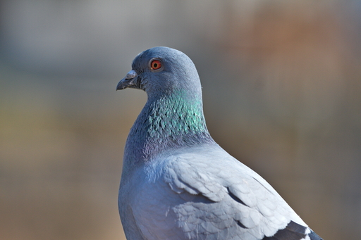
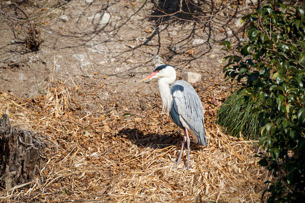
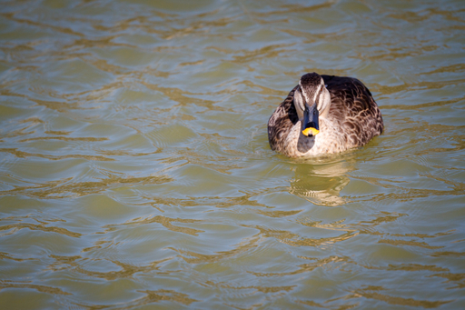
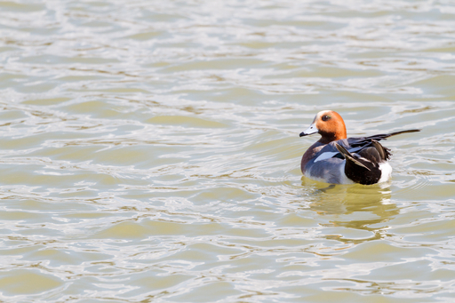
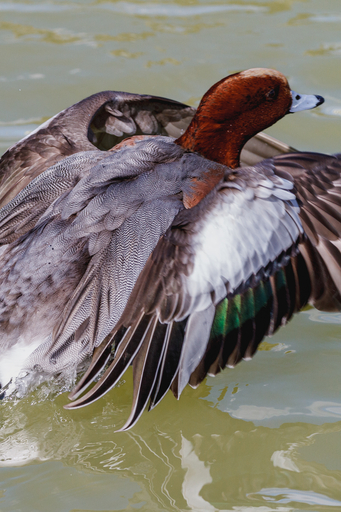
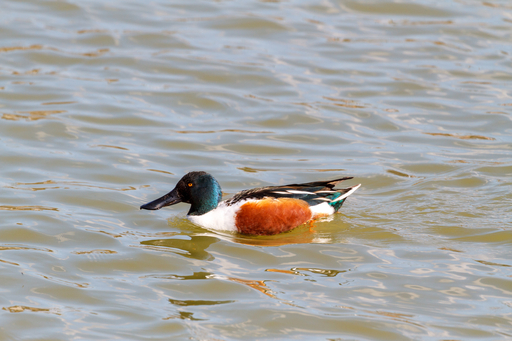

なんとなく鳥を見たいと思い弟の Canon 7D と Canon EF 100-400mm F/4.5-5.6L IS II USM を借りて茨木市の耳原公園にでかけてみた。弟のカメラとレンズを借りたのは自分が持っている PENTAX KP 用の望遠レンズを持っていないからだ。
耳原公園ではドバトやカモ類に餌をやる人が多く、鳥の方から近づいてきたりする。ここまで人馴れしていると野鳥と呼んでいいのか微妙な気分にもなる。

耳原公園には大きな池があり、池の真ん中の島にサギの仲間が営巣している。カワウも数が多いがあまりいい写真が撮れなかったので割愛した。

またカモ類が多く、カワセミやモズ、ジョウビタキ、シジュウカラなど小型の鳥も数多く生息しており、大阪北部の探鳥地としてわりと知られているらしい。
カルガモ

ヒドリガモ

偶然ヒドリガモが飛び立とうとする瞬間が撮れた。

ハシビロガモ

昼間の耳原公園はウォーキングをする人やジョガーが多く、当然それらの人は鳥の存在など気にしない。なので結果的に足音や話し声で鳥を蹴散らして走ったり歩いたりしている。そのため小型の鳥はまったく見ることができなかった。ただ声は幣久良山 ( てくらやま ) の林の方から聞こえるのでウォーキングやジョギングする人が来る前のひっそりとした時間に来れば小型の鳥にも会えるのだろう。